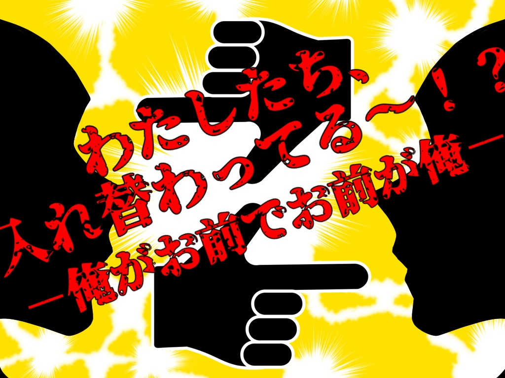
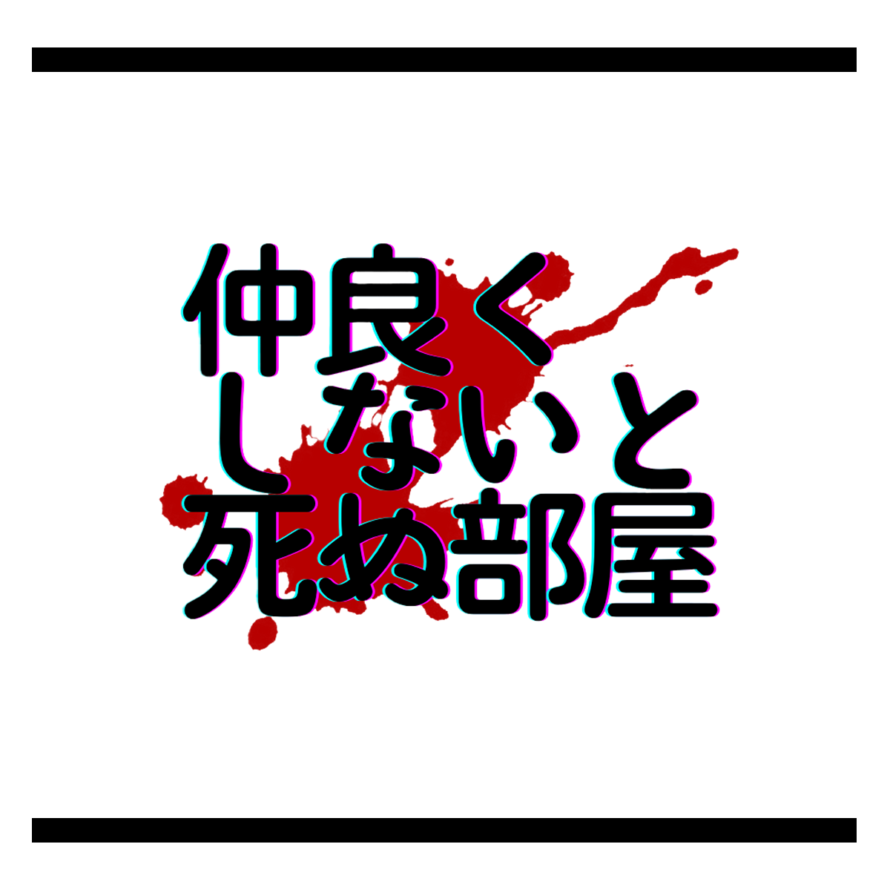
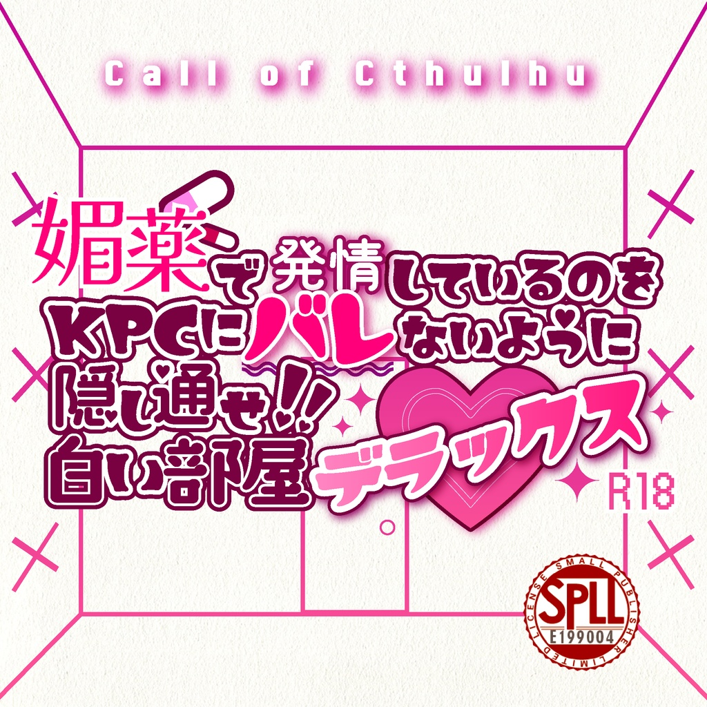
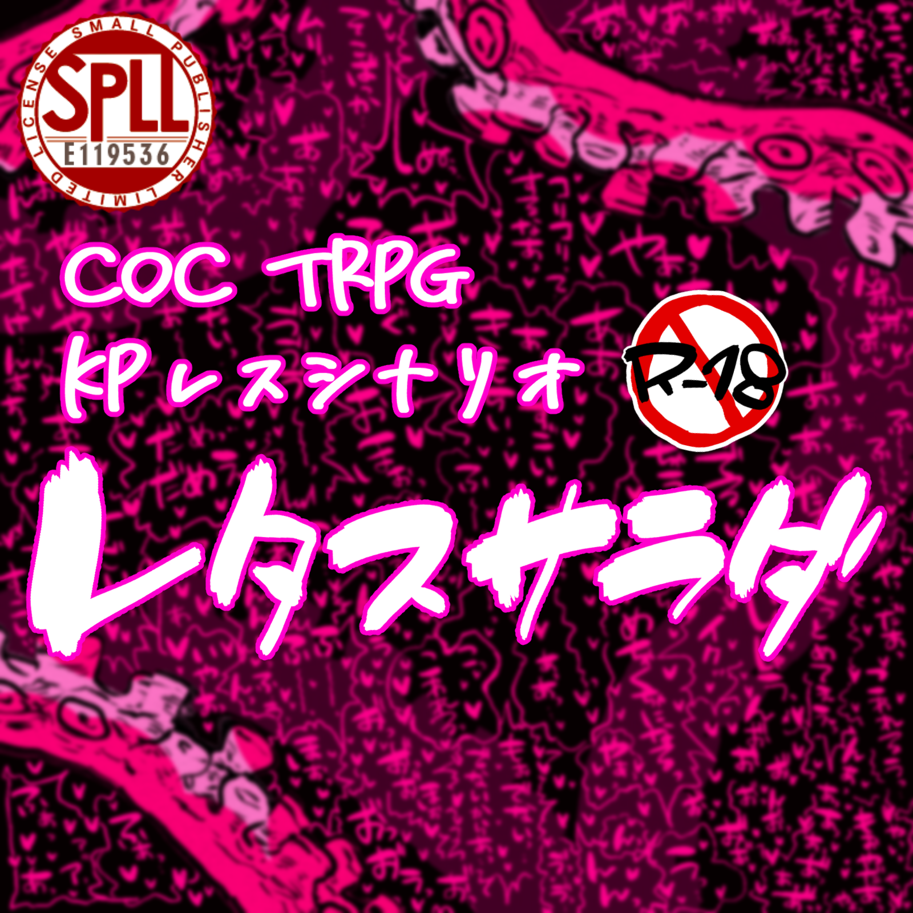
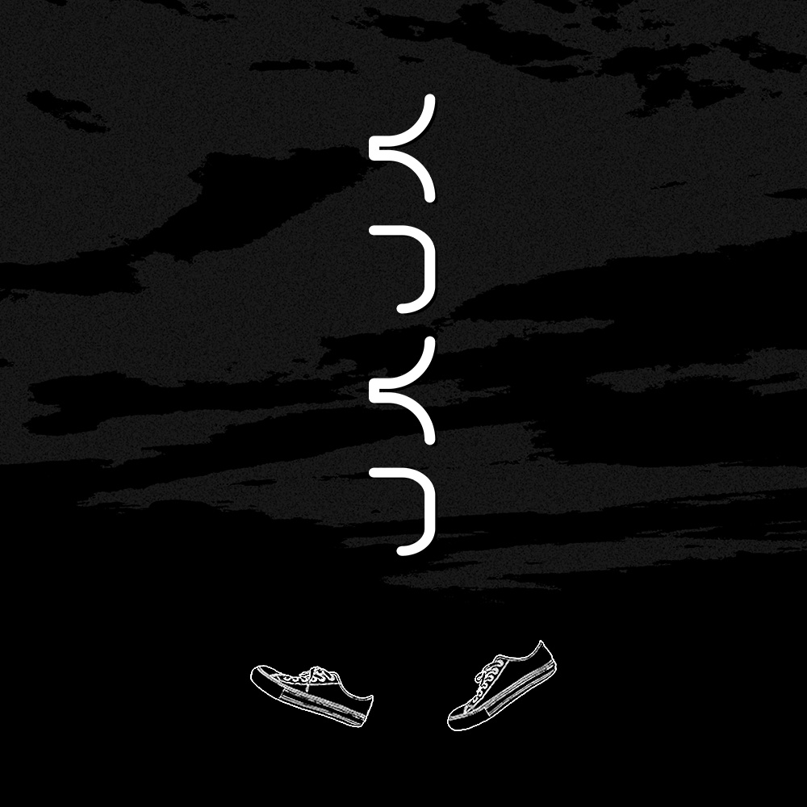
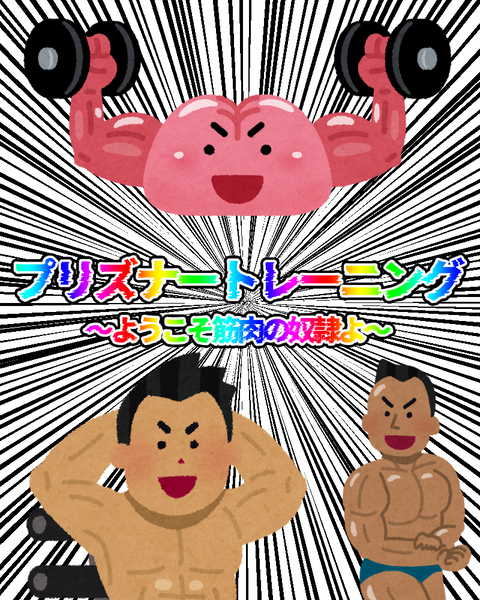

TRPGログ一覧
☰
テキセログ
YouTubeログ
テキセ単発

わたしたち、入れ替わってる～！？
やぶかな

仲良くしないと死ぬ部屋
やぶかな
暴走！妄想！ナマモノノート！
あさはるのーと
【副音声】あさはるのーと
あさはるのーと小説
媚バレックス

媚バレックス
あさはる
媚バレックス
はるさく
媚バレックス
やぶかな
KPレス

レタスサラダ_叶
レタスサラダ_遥啓
レタスサラダ_薮井

くつくつ_薮井
くつくつ_猩猩

プリズナートレーニング_叶
単発
<
>
レッツロシアンうどん
捨てKPC
慄け！因習村
村ホラーRTA
死にたがり電車
ラーメンは乙女の嗜み
ハイフェッツをなぞる病
宇宙船ニル・ノート号の残響
レッツロシアンうどん
(灰よかげんみ❌)
捨てKPC
(脱獄乙女げんみ？)
慄け！因習村
村ホラーRTA
死にたがり電車
ラーメンは乙女の嗜み
(脱獄乙女げんみ❌)
ハイフェッツをなぞる病
宇宙船ニル・ノート号の残響
鰯と柊_あさはる
<
>
鰯と柊（前編）_あさはる
鰯と柊（後編）_あさはる
鰯と柊_しょじょめめ
<
>
鰯と柊（前編）_しょじょめめ
鰯と柊（中編）_しょじょめめ
鰯と柊（後編）_しょじょめめ
灰になってよかった
<
>
灰になってよかった_うたたね
灰になってよかった_灰咲白
カタシロ
<
>
カタシロ_蝿島叶
カタシロ_元目開